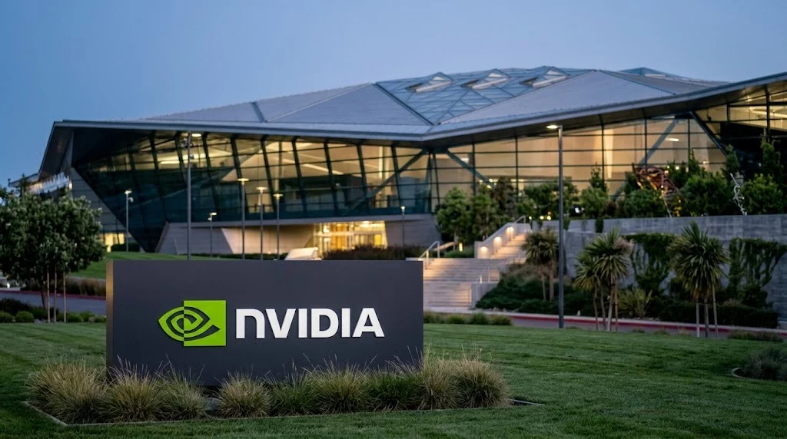

Nvidia Shares Fall After Hours on Reports Its Board Is Preparing to Remove CEO Jensen Huang
The reports, which Nvidia had not publicly addressed in the sources reviewed, come five days before the chipmaker's quarterly results. Analysts disagree on how much a leadership change would affect AI demand.

Nvidia shares fell about 8% in after-hours trading on Wednesday, November 11, after The Wall Street Journal reported that the company's board was preparing to remove chief executive Jensen Huang. The reports, which cite people familiar with the matter, have not been confirmed by Nvidia in the sources reviewed by TTN Finance. Reuters said a source told it the board was meeting late Wednesday to decide, and Bloomberg reported that the board was working with an outside firm to identify potential replacements. The Next Web reported early Thursday that no decision had been announced and that Nvidia had not commented on the board's deliberations.
The stock had closed the regular session at $173.73, up 2.92%, according to Yahoo Finance. After hours, Forbes reported a decline of 8.61% to $158.78, while Yahoo Finance's live coverage showed an overnight quote of $160.39 on the Blue Ocean ATS, down 7.68%. The figures differ because they come from different venues and times. S&P 500 e-mini futures slipped 0.4% in Asian trading after the after-hours drop, according to Reuters.
What has been reported, and what has not
The timeline begins on Sunday, November 8, when Nvidia's board announced an independent investigation, overseen by a committee of independent directors with outside counsel, into reporting that Huang was the target of a foreign intelligence effort. In that statement the board said it had no reason to believe that national security or Nvidia's trade secrets were compromised and expressed confidence in Huang. TTN Finance covered that announcement in its report on the board's internal probe.
Since then, the allegations have widened in media reports. The New York Times reported additional allegations on Wednesday about Huang's conduct, according to Yahoo Finance's account. None of these claims has been proven, and no authority has announced charges. Yahoo Finance also reported, citing ABC News, that the chair of the House Foreign Affairs Committee, Representative Brian Mast, said he was prepared to subpoena Huang, and that committee members had requested a closed-door briefing.
Huang co-founded Nvidia in 1993 and has led it as chief executive since then, Forbes noted. Whether the board will act, and on what grounds, has not been stated by the company. A board decision to keep Huang in place, to appoint an interim chief executive or to begin a formal succession process are all possible outcomes, and Bloomberg's report indicates that contingency planning is underway. That report is itself unconfirmed by Nvidia.
How analysts are reading the risk
Analyst responses diverge. Yahoo Finance's live coverage reported that Bernstein cut its rating to Market-Perform and lowered its price target from $400 to $200, writing that it "feels impossible" for the board to keep Huang in the role. Baird's Tristan Gerra downgraded the stock to Neutral, citing congressional scrutiny, government investigations and uncertainty over the chief executive's tenure, while saying in the note's title that the company will be fine. Raymond James kept a Strong Buy rating, arguing that the allegations do not change the fundamentals.
Independent commentators also split. Patrick Moorhead of Moor Insights said the risk of an ouster was high and that Nvidia has no planned successor, with a structure built around Huang. Shay Boloor of Futurum Group said the market should separate the leadership question from the business, and that near-term revenue is unlikely to disappear if Huang leaves. These are opinions and not facts, and they reflect the absence of a confirmed board decision.
The business behind the stock
Nvidia's leadership question matters beyond its own shares because its processors sit at the center of AI infrastructure spending. Cloud providers and specialized AI data-center operators buy Nvidia accelerators for training and running models, and their capital budgets depend on delivery schedules and software support. CoreWeave's strong forecast this week, covered in TTN Finance's report on CoreWeave's quarterly results, showed how closely customer growth is tied to that supply.
Nvidia also faces trade-policy questions that predate the leadership reports. TTN Finance reported on Chinese procurement of Nvidia's H200 chips under export controls. Any government inquiry that touches the company's China business could add to regulatory risk, although the sources reviewed did not link the board's investigation to a specific enforcement action.
The market reaction should also be placed in context. Yahoo Finance's Ines Ferre wrote that Nvidia was down about 14% in November and had lost about $700 billion in market value even after Wednesday's midday bounce, and Brian Sozzi wrote that the shares were down about 12% since the situation became public. Those are the reporters' calculations from market data, not company figures, and they are tied to the dates on which they were written.
What to watch next
The first development is a statement from Nvidia or its board. The sources reviewed contain none addressing the removal reports, and the board's Sunday statement is the latest official position. The second is Nvidia's earnings report. The company announced a conference call for Tuesday, November 17, at 2 p.m. Pacific time, 5 p.m. Eastern, to discuss results for its third fiscal quarter, which ended October 25. Guidance, supply commentary and any discussion of governance on that call will show how management views the business.
Further steps in the congressional inquiry are also possible. Yahoo Finance reported that committee members said subpoenas would likely follow if Huang did not agree to a briefing date. If the board does move to replace Huang, the market will look for the identity of a successor, the timeline of the handover and whether customers keep their orders on schedule. Until then, the evidence supports only a narrow conclusion: a significant governance question has been reported by several outlets, the company has not publicly confirmed it, and the stock has absorbed a sharp but unresolved shock.
Sources and methodology
- Forbes, "Nvidia Shares Plunge As Board Reportedly Prepares To Oust CEO Jensen Huang," November 12, 2026
- Yahoo Finance, "Nvidia live updates: Stock tanks after new affair allegations, board reportedly preparing to oust Jensen Huang," November 11-12, 2026
- Yahoo Finance, "Stock market today: Nvidia slides following reports of CEO's second affair, possible removal," November 11, 2026
- Reuters via Yahoo Finance, "Asian stocks fragile, Nvidia plummets as board to decide CEO's fate," November 12, 2026
- The Next Web, "Jensen Huang's fate hangs on Nvidia's board after overnight meeting," November 12, 2026
- Nvidia, "Statement From NVIDIA Board of Directors," November 8, 2026
- Nvidia, "NVIDIA Sets Conference Call for Third-Quarter Financial Results," October 28, 2026